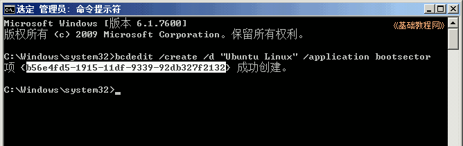

Ubuntu安装基础教程
作者：TeliuTe 来源：基础教程网
十七、Windows7启动菜单 返回目录 下一课在Windows 7 中，使用bcdedit来管理启动菜单，下面我们来看一个练习；
1、准备引导项
1）下载grub4dos，解压文件，复制里面的两个文件 grldr.mbr 和 grldr 到 C:盘下；
2）grldr.mbr是主引导录文件，grldr用于搜索和加载操作系统；
3）放在C:盘的根目录下路径是 C:\grldr.mbr 和 C:\grldr
2、BCDEdit 添加菜单项
1）点左下角“开始-所有程序-附件”找到命令提示符，瞄准点右键，选“以管理员身份运行”；
2）在出来的运行对话框里点“是”，用管理员身份打开命令行窗口；
3）在出来的窗口中输入下面的命令，可以复制了粘贴到里面，按回车键执行；
bcdedit /create /d "Ubuntu Linux" /application bootsector
4）成功运行后出来一行数字，点窗口左上角黑按钮，选“编辑－标记”；
5）小心把鼠标移到左括号后面，按住拖选中这一行后面一个括号前面，如果错了就重新来过，
选好已后按一下回车键，复制括号里的这行内容，也可以点按钮菜单选“复制”；

6）打开一个记事本，把复制的这串内容粘贴进去，再复制下面的三行进去，然后分别替换掉里面三行括号里的内容；
bcdedit /set {249c5723-1926-11df-b04d-9a47af0f82cb} device partition=C:
bcdedit /set {249c5723-1926-11df-b04d-9a47af0f82cb} path \grldr.mbr
bcdedit /displayorder {249c5723-1926-11df-b04d-9a47af0f82cb} /addlast
7）这样就准备好了三行命令，里面的GUID都已经替换成了自己第一个命令里的；
8）依次复制每一行命令，然后在命令行窗口中点右键选粘贴，按回车键运行；
9）粘贴好以后，按回车键运行，同样执行另外两条命令；
10）重新启动系统，就会出现一个启动菜单，按方向键选择Ubuntu就可以进入grub环境，引导Ubutnu系统；
本节学习了在Windows7中添加启动菜单项的基本操作，如果你成功地完成了练习，请继续学习下一课内容；
本教程由86团学校TeliuTe制作|著作权所有，商业用途请与作者联系
基础教程网：http://teliute.org/
美丽的校园……
|
|
|
|
|
|
转载和引用本站内容，请保留版权信息和本站链接。